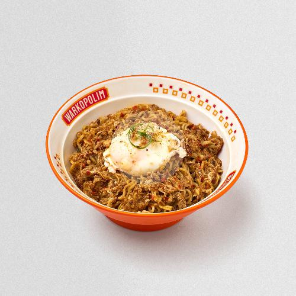

Bukan mie instan biasa! Diracik nyemek dengan bumbu rempah rahasia yang wangi, disajikan dengan topping telur setengah matang yang lumer.
Titik Kumpul Andalan, Pas Buat Nongkrong Seharian.

Warkopolim lahir dari sebuah gagasan sederhana: menghadirkan kembali asyiknya budaya nongkrong khas warung kopi ke dalam konsep yang lebih modern, bersih, dan nyaman untuk semua kalangan. Bukan sekadar tempat makan atau ngopi biasa, kami hadir sebagai ruang kumpul berbasis komunitas yang mewadahi berbagai cerita, canda tawa, hingga diskusi santai para pengunjungnya. Berawal dari satu titik, dukungan dan antusiasme teman-teman nongkrong telah membawa Warkopolim berkembang hingga kini hadir di empat cabang berbeda agar bisa lebih dekat denganmu. Di mana pun lokasinya, komitmen kami selalu sama: menyajikan suasana yang bersahabat ditemani sajian andalan seperti Mie Jagoan dan Kopi Susu Syahdu.
Intip asyiknya suasana dan momen kebersamaan di Warkopolim.
Mampir sekarang juga! Kami hadir di 4 titik lokasi untuk menemanimu nongkrong setiap hari.